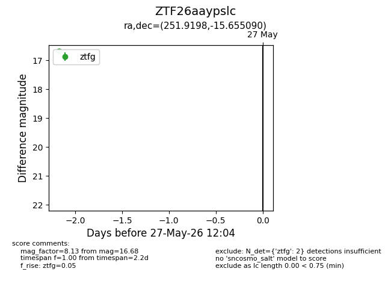
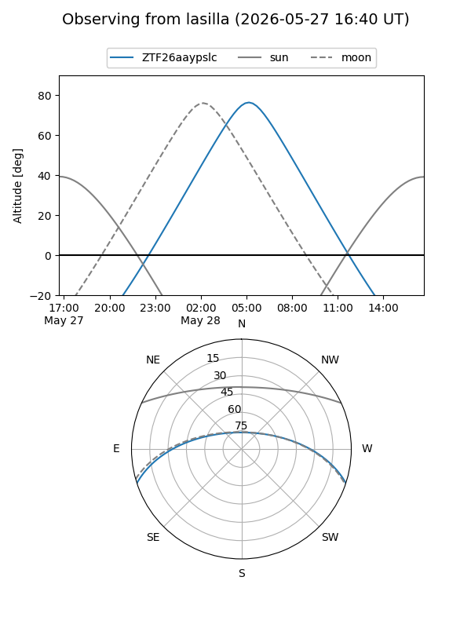
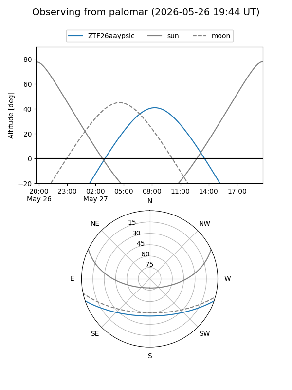

ZTF26aaypslc
Target ZTF26aaypslc at 2026-05-27 12:10
Aliases and brokers:
lsst-FINK: link
lsst-Lasair: link
lsst-ALeRCE: link
ztf-FINK: link
ztf-Lasair: link
ztf-ALeRCE: link
alt names
ZTF26aaypslc (ztf,fink_ztf)
Coordinates:
equatorial (ra, dec) = 251.9198,-15.65509
equatorial (HMS+DMS) = 16:47:40.75,-15:39:18.32
galactic (l, b) = (3.5038,+18.51512)
Flags:
Photometry:
last ztfg=16.68
2 ztfg detections
Lightcurve

Visibility


Additional plots